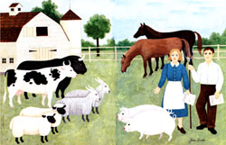
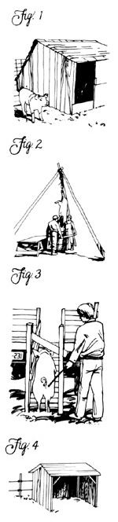
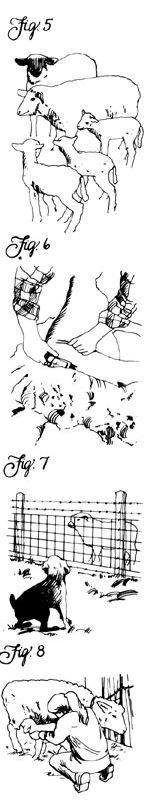
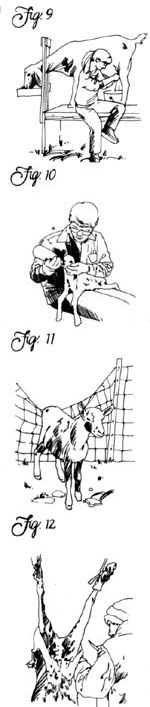
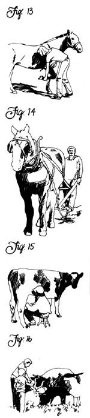

Issue # 105 - May/June 1987
How to choose mid-sized and large animals for your country home.
Moving from raising the bees, poultry and rabbits we discussed in issue 104 to keeping "real" livestock is quite a jump. Nonetheless, doing so is a move many newly arrived countryfolk are eager to make. And most of the time, things work out just fine for novice keepers of cattle, horses, sheep, goats and pigs. Still, it's wise not to commit yourself to large or mid-sized livestock without first analyzing the vastly greater demands on your time, facilities and budget that such stock will make. Once you've done your research and feel certain you're ready, I'd suggest starting of with feeder pigs.
As mid-sized farm animals go, pigs are easy to care for. They can be purchased inexpensively (for as little as $20 in many cases) as weaned piglets (shoats), require only a small pen and rudimentary shelter from the elements, need be kept just through the warm-weather months to mature and are anything but finicky eaters (Fig. 1). With pigs, you have little to lose and much to gain. Even if your initial experience suggests that "pig ranching" isn't your cup of soup, you'll still have earned both that knowledge and a freezerful of tender, delicious, additivefree pork.
Mature pigs kept as breeders require only four or five pounds of mash daily, plus whatever table scraps you can come up with. To fuel a 20- to 40-pound shoat to maturity (at which point you'll net around 120 pounds of hams, pork chops, ribs and bacon) will require six to seven months and some 500 pounds of hog pellets plus table scraps-or a half-ton-plus of garden excess or restaurant garbage. Including the cost of hog pellets, cholera shots and wear and tear on your equipment, you can raise pork for well under $1 a pound with little more effort than filling the feed and water troughs once a day.
To convert a pig into pork, you'll need either a) block and tackle, scalding drum, bell scraper, knives, stunning gun, cutting table, pickling tank and smokehouse (Fig. 2); or b) the will and a way to haul several hundred pounds of uncooperative hog to a butcher. (Expect to pay from $30 to $50 per adult hog for custom butchering, hams and bacon salted and smoked in the bargain.)
To transport hogs, I equip my pickup with strong side and end rails, then herd the oinkers up a sturdy 2 1/2-footwide loading chute equipped with solid, three-foot-high sides (so the cantankerous beasts can't see out and be tempted to bolt). Here's a method for simplified pig loading:
Feed the chosen porker right at the pen gate for a week or so, then securely pen it alone and let it go hungry through two feedings. At feeding time on the fateful day, lure your hungry hog up into the loading chute with a trail of goodies (Fig. 3). When the animal's rump is clear of the pen gate, close the gate. The pig will then follow the food trail right up into the back of your truck. Now close the truck gate, put the end rail in place and you're ready to roll.
I keep hogs from spring until slaughtering time (generally in October, after the first good frost, when most of the flies are gone). Their home for that time is a small woodland lot enclosed with dual-wire electric fencing. A simple shed provides adequate shelter (Fig. 4). The pigs sleep most of the time, stay clean and healthy and use a far corner of the lot as a latrine. With trees for shade, they don't even roll in the stream for a coating of cooling mud. Only when pigs are kept in close quarters, their slop allowed to rot and their sweetish-smelling manure permitted to accumulate in a swampy wallow, do they become offensive. And that, of course, is no fault of their own.
If you'd like to take raising pigs a step beyond mere spring-to-fall feeding, you can have one or more of your sows bred. Should you decide to take this step, you'll need to provide adequate wintering quarters for the sow and her offspring, a farrowing shed or pen and a heated brood box (creep) for litters born during cold weatherplus some help in castrating boar piglets.
Keeping sows and piglets isn't too much trouble-if you're up for it. But I don't recommend keeping a boar unless you decide to become a professional hog raiser and are prepared to pay the piper toward that end. Big, strong and mean, boars require a stout pen made of boards or hog panels fastened securely to deep-set posts.
No matter what pig-raising approach you decide to take-limited or whole-hog-you can look forward, come fall, to receiving substantial quantities of yummy, wholesome pork in return for your efforts. For more information, read Small Scale Pig Raising ($11.95 postpaid from Storey Communications, Inc., Schoolhouse Rd., Pownal, VT 05261).
It hardly pays to buy young lambs-at $50 to $100 each for good stock-and feed them to adulthood for strongflavored mutton. The trick, instead, is to raise your first lambs into adult breeders, then slaughter their offspring as fat, tender lambs. With an acre or two of pasture, a shade tree, a third of a ton of hay for winter and a handful of grain a day, a ewe lamb will mature in a year and, if bred, produce a lamb or two of her own (plus five to eight pounds of wool). After maturing on their mother's milk and a little grain and graze, each of your new lambs will provide you with a wonderful fleece hide and around 50 pounds of delicious meat.
When you're buying sheep, it's wise to spend a few dollars more for pedigreed stock. Stick with a registered breed that's popular in your area-which will greatly increase your chances of selling your animals quickly and profitably should the need arise.
Colicky children and ulcer-prone adults find goat's milk more digestible than cow's milk.
A minimal flock consists of a ram and two or three ewes (Fig. 5). A male sheep is about the only stud animal that's docile enough for a beginner to handle; the worst you can expect is an occasional cautionary butt to your backside. A ram needs only grass or a couple of bales of hay per month to stay healthy, and should be able to replenish your herd for at least five years.
Sheep load into a truck more easily than pigs. If they won't drive in readily, chase them down one at a time and tackle them against the fence. Once down, they'll go limp and let you tie their feet and hoist them into the back of a truck.
If you're going to keep sheep, you'll either have to get on the shearer's circuit or learn to do the fleecing chores yourself (Fig. 6). Shearing isn't difficult; most sheep sit calmly while you work. Still, I'd advise you to get an electric shearer, since few modern hands have the strength to wield hand clippers for more than a few minutes at a time.
To protect your investment, you'll need to fence your pasture well, or else keep shepherd dogs with the flock to discourage feral canines and, in some parts of the country, other predators. As long as feed and water are available, a small flock of sheep will stay put behind a single-strand electric fence strung at (sheep) nose level-but it takes a strong and tight six-foot-high barbed wire, wire fabric or multiple-strand high-tensile electric fence to keep out predatory canines (Fig. 7).
Centuries of genetic manipulation by humans have left the modern ewe with a myriad of birthing problems, including breeches, prolapses, stillbirths and dry udders (Fig. 8). That's why I strongly suggest-at least for your first spring lambing-that you arrange for a vet to be on 24-hour call. And familiarize yourself with lambing by reading William K. Kruesi's The Sheep Raiser's Manual ($15.45 postpaid from Williamson Publishing Company, Box 185, Charlotte, VT 05445). You'll also need to invest in a lamb puller, nursing bottles, heat lamps and artificial milk-and plan to stay up nights to see your ewes through their most difficult and dangerous time.
No matter how endearing your new lambs are, resist the temptation to turn them into pets. Sheep get soft, spoiled and soiled unless kept out grazing in the wind and rain and snow. If pan-fed to adulthood, a sheep will loaf happily around your door, bleating stupidly and incessantly, relieving itself indiscriminately and drawing flies.
Being flock animals, sheep aren't tremendously interesting as individuals. If you want farm animals with lots of individual personality, try goats-which all but insist on being treated as people. However, goats are more expensive to buy, so shop around carefully before spending $50 to $200 for a nonpedigreed, "grade" milker-or even more for an animal with papers. For feed, figure on a ton of hay (half that if you have good pasture or browse in the summer) and up to half a ton of mixed grain per year per milker.
Dairy goats require a lot of attention. Twice each day-early and late-you'll have to fetch each doe from pasture or pen to the milking station, wash her down, provide her with a bucket of grain to keep her happy while you milk, then return her to pen or pasture when she's done (Fig. 9). But you won't be done at that point: The fresh milk must be strained and cooled, and the milking equipment washed and sterilized before you can move on to other chores. If you have one or two goats, all of this will take a couple of hours a day.
In light of the purchase expense, feeding costs and daily commitment required to keep dairy goats, you'll understand why I suggest that, before getting into goats, it's wise to weigh your costs in cash and time against the value of the milk your goats will give. If a twice-daily milking regimen doesn't appeal to you or the cost of keeping goats averages out to be greater than the purchase price of an equivalent amount of cow's milk-why bother?
Well, for one thing, many countryfolk aren't blessed with the pasture and facilities required to keep dairy cows, but want nonetheless to "grow" their own milk. A good goat will produce milk that you can't tell from cow's milk . . . unless you try making cheese. Sure, goat cheese can be grand, don't get me wrong; but the nonseparating quality of goat's milk requires special recipes. For a wealth of goat (and cow) cheese recipes that work, explore Robert and Ricki Carroll's fine book Cheesemaking Made Easy ($8.95 postpaid from Storey Communications, address above).
In addition to producing your own goat's milk and cheese products, you can often market any excess. Since goat's milk is naturally homogenized, colicky children and ulcer-prone adults find it more digestible than cow's milk. Thus, with the help of a two-gallon pasteurizer (around $150 new), the possibility exists of developing a small but lucrative business selling milk to folks on special diets.
Unlike pigs and sheep, dairy goats need substantial shelter against winter's cold and summer's sun and rain. A sound shed will do for kids and wethers (castrated males), but milking demands strict sanitation. Thus, the perfect living quarters for does consists of a stall housed in a warm barn furnished with a milking bench, nearby grain and hay storage facilities and, of course, running water.
Put your horses on the vet's twice-yearly circuit for shots and worming.
To prevent udder problems, keep your does' bedding clean by spreading straw, wood shavings or old hay over wet and soiled spots every day, gradually building up a self-composting litter bed. (Transfer the deep layer of rich mulch to your garden several times a year to provide a superb medium for growing melons, tomatoes and berries.)
Does must be bred annually to refresh their milk supply. Well-treated dairy goats are naturally tame and will follow you right up into the bed of a truck, or even into the back of a station wagon, for a trip to the breeder. Once there, the stud fee will run from around $20 up, plus boarding for three days. Helping to offset this expense is the fact that each of your bred ladies will produce one or two kids-every one of which you'll have to bottlefeed to weaning age (Fig. 10). If you allow kids to start nursing a doe, they'll be difficult to stop.
If the kids (twins are common) are doe-babies, you'll soon have more milkers, with a promise of even more the next year. But if they're bucks, it's decision time. Male goats must be castrated-unless they're stud candidates from blue-ribbon matings of outstanding milk-producing lines. Unless you plan to become a breeder, don't try keeping a billy. They're thoroughly unpleasant creatures that will try to breed with everything and spread a pervasive musk that turns the stomachs of all but the most ardent goat ropers.
Desexing bucks and branding off the horn buds of all kids (both sexes) are simple but essential chores. However, both tasks require special tools and skills, and may be operations you don't care to undertake yourself. If not, your breeder will do it-for a fee, of course. You will, however, need to learn to trim hooves and give worm medicine.
While many countryfolk consider goats wonderful company, others find them too sneaky and set on having their own way. And their blatting can be irritating: If goats don't get their grain on time, if they don't have clean beds, comfortable temperatures in their living quarters and freedom from insect pests, they'll blat all day long.
Being natural climbers, goats will clamber up rocks, trees, walls, low sheds and floppy wire fences (Fig. 11). Electric fencing serves as little but a challenge, a board fence is but an appetizer and a smart old doe will learn to open any latch you can devise. Goats aren't strong, though; they can't bull a fence down or root beneath one like a hog. The answer is a six-foot-high wire mesh or chain-link fence strung tight. Padlock any gates.
To refute an old-time belief, goats don't eat tin cans (what they were after was the horse glue used to stick paper labels onto early food tins). They're natural browsers and will nip curiously at just about anything-tree leaves, flowers, the bandana in your hip pocket, your hair. In spite of their healthy and varied appetites, goats are fastidious eaters that will refuse to take hay or grain off a dirty floor and will die of dehydration rather than drink water with a dead fly in it. Honest! Goats lick them selves almost as much as cats and, billies excepted, are the cleanest livestock you can own.
Wethers are good only as pets, for pulling goat carts or to slaughter when young (yielding about 20 pounds of meat that can be delectable if properly handled and aged). And goat hides make wonderfully soft, thin leather. Unfortunately, few custom meatcutters will process goats, so you'll probably have to do the butchering yourself (Fig. 12). This can become a major problem for some folks: I know of goat fanciers who've ended up tending large herds of fussy, nonproductive wethers and retired milkers they could neither sell nor bring themselves to kill.
If you'd like to learn more before jumping into the goat game (a darned good idea), check out Gail Luttman's Raising Milk Goats Successfully ($10.45 postpaid from Williamson Publishing Company, address above).
Please: Do not attempt to keep horses unless you have riding experience, a working knowledge of saddlery and tack, a good understanding of pasture management, sufficient pasture and facilities and a willingness to give your horses proper-and often expensive-health care (Fig. 13). For such large beasts, horses are surprisingly delicate. Those silky flanks can easily be cut and otherwise injured; those gorgeous, slender legs are prone to fractures; and, since horses can't upchuck, one bad feeding can spell disaster.
Immediately upon purchasing a horse, make contact with a good country vet (not an urban cat-and-dog specialist) who's willing to hurry out for emergencies. At a cost of around $50, you can (and should) put your horses on a country vet's twice-yearly circuit to receive shots, worming and a general checkup. Trimming the hooves of unshod horses isn't a difficult task to master, but shoeing is a skilled trade. Consequently, you'll also need to have the farrier call around at least a couple of times annually-at around $50 per visit and up.
Fencing needn't be elaborate for tame horses. A single charged wire will generally do the trick-as long as you provide sufficient feed and plenty of clean water. Although most predators are no threat to adult horses, feral dogs will run them, and bears and cougars do occasionally take colts left unguarded in remote pastures in some parts of the West. To avoid predation problems, simply see to it that all livestock births take place in the safety of a barn or barnyard.
Horses are capable of enduring even the most severe climates with minimal shelter (a few trees for wind and sun protection) if their feed is. adequate. An adult horse will consume a quart or more of grain twice a day, plus a third to half a bale of hay. But horses winter best in cozy stalls with dry straw bedding (pitchfork it clean and dry during your twice-daily feeding and watering sessions). In summer, horses must have shade and unlimited fresh water.
Feeder cattle are nowherenear as difficult and expensive to keep as milkers.
Driving a team of draft horses is, to my way of thinking, one of the greatest joys country living has to offer. It's also the cheapest and most satisfying way to plow small fields or haul logs out of a thickly timbered wood lot (Fig. 14). But to develop a good team requires years of training, preferably begun when the animals are colts. And you'll need special training, as well-to teach your horses to work together, to care for their hardworking lower legs and hooves and to supply just the right amounts of water, grain and roughage at the proper times.
Sure, you can train yourself and your draft animals on the job, but please don't try it unless you have an experienced drover alongside to show the way.
Libraries are full of equestrian guides, but for work horses, the book to search out is Maurice Telleen's The Draft Horse Primer ($17.95 postpaid from Rodale Press, Inc., 33 E. Minor St., Emmaus, PA 18049).
Finally, we come to the queen of the farmstead: the milk cow.
Before you buy, think: Can you honestly find a use for two to three gallons of raw milk per day (Fig. 15)? If you have a large crop of children and enjoy making your own cheese and churning your own butter, then possibly you can justify keeping a cow. But don't plan to make money by selling Daisy's excess output: Federal laws stringently regulate the sale of raw milk products, while price competition in the commercial dairy-products business is brutal.
For milk cows to produce their full capacity of around 1,000 gallons per 300-day lactation period, they must be bred (or artificially inseminated) annually. This procedure, naturally,will also provide you with at least one calf per cow per year. What to do with the little critter? You can sell it newborn for around $50; bottle-feed it in darkness for a few weeks, then slaughter it for milk veal; or raise your heifer calves for milkers (a two-year endeavor) and your steer calves for meat.
Keeping milk cows all but demands a real barn-and lots of hard, unpleasant work keeping that barn mucked out. What's more, cleaning dried manure off a cow's flanks and udder can spoil your appetite for dairy products. I'm not trying to discourage you from keeping milkers, but merely presenting some of the realities that so often get overlooked by starry-eyed country newcomers anxious to "get back to the basics." Before investing in a milker, at least study a good guide-such as Dirk Van Loon's The Family Cow ($10.95 postpaid from Storey Communications, address above).
Feeder cattle are nowhere near as difficult and expensive to keep as milkers (Fig. 16). Raising a steer calf for meat takes only water, a couple of acres of pasture and enough hay for two winters. But no family I've ever known can eat through some 700 pounds of beef before it becomes spoiled or freezer-burned. So don't try "ranching" unless you have a big appetite for red meat and a large freezer for long-term storage-or a sales outlet for ungraded beef. (One excellent option is to raise a beef "on the halves" with another family.)
Opinions differ on the palatability of strictly grass-fed beef, especially that of steers from dairy cow stock. Many love it, while others maintain that often such meat is tough, the flavor strong and the fat yellow and soapy. To get the bland-flavored, white-marbled meat you find in most supermarkets takes a month or more of grain feeding in a quiet, low-exercise environment. (An isolated, low-light barn stall is ideal.)
I don't recommend trying to slaughter and butcher your own beef unless you're equipped with a deer rifle, a heavy-duty hoist, a commercial meat grinder, adequate offal-disposal facilities and plenty of hands-on experience. Phyllis Hobson's Raising a Calf for Beef ($8.95 postpaid from Storey Communications, address above) is a good guide to fattening and slaughtering your own burger and filet mignon.
An ad in a rural newspaper can almost always sell a partly finished feeder steer for $300 to $500 and up. A first-freshening dairy cow from blue-ribbon bloodlines can fetch $2,500. And a high-bred, well-trained saddle horse can be worth megabucks. But tired old cows, goats and sheep, as well as untrained, unregistered horses, can be difficult to dispose of at more than glue-factory prices.
That's why I'm going to chance boring you with this plea one more time: Please wait awhile before taking on large livestock, won't you? If you want to try your hand at milking right away, you'd be smart to start with goats. A good doe's gallon per day is a lot of milk. Get two goats if you need more-then trade in the pair for a cow once you've gained the experience and self-discipline to care for such a large and demanding creature properly.
By planning before buying any farm animals, then starting off small and working up, you can avoid the traps that have snared so many others. And you'll also be assuring that keeping livestock will evolve into one of the rewarding experiences of your country life.
|
 |
 |
 |
|
 |
 |
|